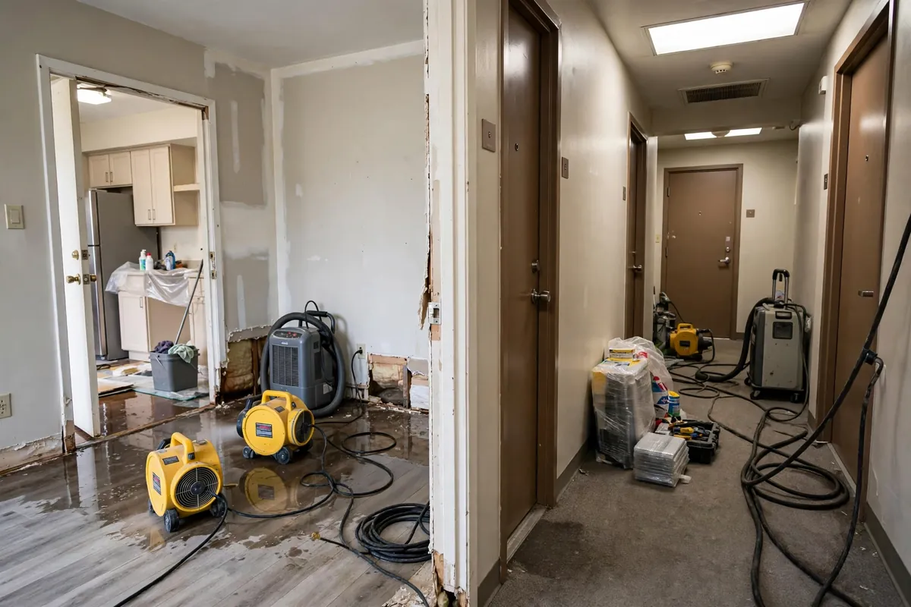

Apartment Water Cleanup in Hollywood, FL
Water doesn't respect property lines. In an apartment, a failed washing machine hose on the third floor can stain the ceiling two floors down, and a slow toilet-valve leak can soak a neighbor's closet before anyone notices. Apartment water cleanup in Hollywood, FL means moving fast on extraction and drying while coordinating with building management, maintenance staff, and sometimes several households at once.

Understanding Apartment Water Cleanup in Hollywood
Most apartment losses start with plumbing: supply lines to toilets and sinks, washing machine hoses, dishwasher connections, and water heater failures in utility closets. Because units share walls, floors, and vertical drain stacks, water travels sideways into adjacent apartments and downward through floor assemblies. The first job is establishing the true footprint — which often extends beyond the unit where the leak started — using moisture meters on shared walls and the ceilings below.
Access is the defining challenge in apartment work. Technicians may need keys or escorts for affected units, permission to open walls in common areas, and sign-off from a property manager before placing loud drying equipment in hallways. Hollywood has a large stock of mid-rise and garden-style buildings, many built with concrete block that slows drying inside wall cavities. Clear documentation matters here as well: renters, landlords, and managers all need the same record of what got wet and what was done.
How We Handle the Job
We begin by locating the source and mapping every affected unit — not just the one that called. Standing water is extracted from all impacted areas, and moisture readings are taken on shared walls, ceilings below the source, and flooring throughout. Drying equipment is placed to serve multiple rooms efficiently, with attention to noise in occupied neighboring units. The property manager stays in the loop throughout so access and scheduling stay smooth.
Drying progress is verified room by room with moisture meters before equipment is pulled — concrete and block walls in particular need confirmed readings, not guesses. Photos and moisture logs document the full scope for the landlord, the renter, and the insurer alike. Related services such as emergency water extraction, structural drying, and flood cleanup often connect to the same loss depending on conditions on site.
Local Response and Insurance Support
Searching for apartment water cleanup near me usually means you need help without delay. We answer emergency calls around the clock. Documentation — photos and moisture readings — supports conversations with your insurance carrier when the loss is sudden and accidental. We do not decide coverage; we provide clear technical information about the work performed.
When to Call
Call if you have active water, wet materials that are not drying, odors after a leak, or a backup that may involve contaminated water. Early action in Hollywood’s climate is almost always less disruptive than waiting. For neighborhood-specific service, see our service areas. For the full list of capabilities, visit all services.
Frequently Asked Questions
Who pays for water damage in a rental — the tenant or the landlord?
It depends on the lease and the cause. Landlords typically handle the building structure and plumbing systems, while tenants handle their belongings and any renter's insurance claim. Sudden pipe failures are usually the owner's responsibility; damage from a tenant's overflowing tub may not be. Document everything and notify your landlord or manager in writing right away.
What if the leak came from another apartment?
This is common — water from an upstairs bathroom or kitchen often shows up as a stain on your ceiling. Tell your property manager immediately so the source unit can be accessed. The responsible party's insurance or the building's policy usually addresses the damage, but stopping the source quickly matters more than sorting out fault in the moment.
Can drying equipment run while I'm living in the apartment?
Usually yes. Air movers and dehumidifiers are loud, but they can be scheduled around your routine and moved as rooms finish drying. Most apartment drying takes a few days of equipment runtime. If noise or access is a concern, talk to the crew lead — equipment can often be consolidated or run during daytime hours.
Do I need to move my furniture?
Furniture in wet areas should be moved or blocked up so legs don't sit in moisture and finishes aren't damaged. Small items and electronics should be relocated by the occupant. Larger pieces can often be shifted within the unit, and crews can help with heavy items in the affected rooms.